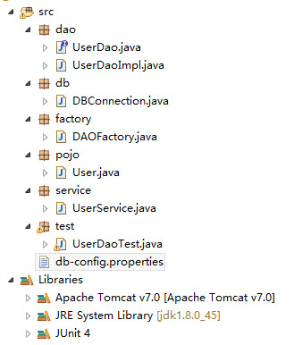

概念
一般的信息系统的开发架构如下
- 客户层：客户端浏览器
- 显示层：利用jsp和Servlet进行页面显示
- 业务层：对数据层的原子性DAO操作进行整合
- 数据层：对数据库进行原子操作，例如增删改查等等
- 数据库
DAO就是Data Access Object的简称，主要就是对数据进行操作，对应上面的层级实时数据层。 在数据操作过程中，主要是以面向接口编程为主。一般将DAO划分为下面几个部分：
- VO(Value Object)：JAVABean，主要由属性和属性的getter/setter方法组成，命名一般于表名一致，属性也与表中的属性一致
- DatabaseConnection：用于打开和关闭数据库的类
- DAO接口：用于声明数据库的操作，定义数据库的原子性操作，例如增删改查等，命名如UserDao，有时在前面加上I如IUserDao表示是一个接口
- DAOImpl：实现DAO接口的类：但是不负责数据库的打开和关闭,命名如UserDaoImpl
- DAOProxy：也是实现DAO接口，主要完成数据库的打开和关闭，命名如UserService或者UserDaoProxy
- DAOFactory：工厂类，通过getInstance()取得DAO的实例化对象，命名为XxxFactory，如UserDaoFactory
DAO开发
项目结构如下图

User.java
import java.sql.Date;
public class User {
String name;
Date birthday;
int sex;
public String getName() {
return name;
}
public void setName(String name) {
this.name = name;
}
public Date getBirthday() {
return birthday;
}
public void setBirthday(Date birthday) {
this.birthday = birthday;
}
public int getSex() {
return sex;
}
public void setSex(int sex) {
this.sex = sex;
}
}
db-config.properties
driverClass=com.mysql.jdbc.Driver
url=jdbc:mysql://127.0.0.1:3306/tian?characterEncoding=utf-8
user=root
password=123456
DBConnection.java
import java.io.IOException;
import java.io.InputStream;
import java.sql.Connection;
import java.sql.DriverManager;
import java.util.Properties;
public class DBConnection {
private static String driverClass = null;
private static String url = null;
private static String user = null;
private static String password = null;
private Connection conn = null;
static {
InputStream inputStream = DBConnection.class.getClassLoader().getResourceAsStream("db-config.properties");
Properties properties = new Properties();
try {
properties.load(inputStream);
driverClass = properties.getProperty("driverClass");
url = properties.getProperty("url");
user = properties.getProperty("user");
password = properties.getProperty("password");
} catch (IOException e) {
throw new ExceptionInInitializerError("Load 'SqlConfig.properties' Error!!!");
}
}
public DBConnection() throws Exception{
try {
Class.forName(driverClass);
this.conn = DriverManager.getConnection(url, user, password);
} catch (Exception e) {
throw e;
}
}
public Connection getConnection(){
return this.conn;
}
public void close() throws Exception{
if (this.conn!=null) {
try {
this.conn.close();
} catch (Exception e) {
throw e;
}
}
}
}
UserDao.java
import java.util.List;
import pojo.User;
public interface UserDao {
/**
* 加入一个用户
* @param user 要添加的对象
* @return 是否增加成功的标记
* @throws Exception 如果有异常将直接抛出
*/
public boolean addUser(User user) throws Exception;
/**
* 列出所有的用户
* @return 所有的用户
* @throws Exception 失败将抛出异常
*/
public List<User> listAll() throws Exception;
}
UserDaoImpl.java
import java.sql.Connection;
import java.sql.PreparedStatement;
import java.util.List;
import pojo.User;
public class UserDaoImpl implements UserDao{
private Connection conn = null;
private PreparedStatement pstmt;
public UserDaoImpl(Connection conn) {
this.conn = conn;
}
@Override
public boolean addUser(User user) throws Exception {
boolean flag = false;
String sql = "insert into user(xxx,xxx,xxx) values(?,?,?)";
this.pstmt = this.conn.prepareStatement(sql);
this.pstmt.setString(1, user.getName());
this.pstmt.setDate(2, user.getBirthday());
this.pstmt.setInt(3, user.getSex());
if (this.pstmt.executeUpdate()>0) {
flag = true;
}
//关闭
this.pstmt.close();
return flag;
}
@Override
public List<User> listAll() throws Exception {
//实现....
return null;
}
}
UserService.java
import java.util.List;
import dao.UserDao;
import dao.UserDaoImpl;
import db.DBConnection;
import pojo.User;
public class UserService implements UserDao{
private DBConnection dbconn = null;
private UserDao dao = null;
public UserService () throws Exception{
this.dbconn = new DBConnection();
//用dao来代理daoimpl
this.dao = new UserDaoImpl(this.dbconn.getConnection());
}
@Override
public boolean addUser(User user) throws Exception {
boolean flage = false;
//业务逻辑，如先检查是否存在同名用户,直接返回false拒绝出现同名用户
flage = this.addUser(user);
//关闭数据库连接
this.dbconn.close();
return flage;
}
@Override
public List<User> listAll() throws Exception {
//业务逻辑....
List<User> list = this.dao.listAll();
//关闭数据库连接
this.dbconn.close();
return list;
}
}
DAOFactory.java
import dao.UserDao;
import service.UserService;
public class DAOFactory {
public static UserDao getUserDaoInstance() throws Exception{
return new UserService();
}
}
UserDaoTest.java
这里使用junit做测试
import java.sql.Date;
import java.util.List;
import org.junit.Test;
import factory.DAOFactory;
import pojo.User;
public class UserDaoTest {
@Test
public void addUser(){
User user = new User();
user.setName("name");
user.setBirthday(new Date(1996, 4, 11));
user.setSex(0);
try {
DAOFactory.getUserDaoInstance().addUser(user);
} catch (Exception e) {
// TODO Auto-generated catch block
e.printStackTrace();
}
}
@Test
public void listAllUser(){
List<User> list;
try {
list = DAOFactory.getUserDaoInstance().listAll();
for (User user : list) {
System.out.println(user.toString());
}
} catch (Exception e) {
// TODO Auto-generated catch block
e.printStackTrace();
}
}
}